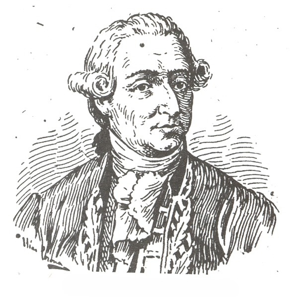
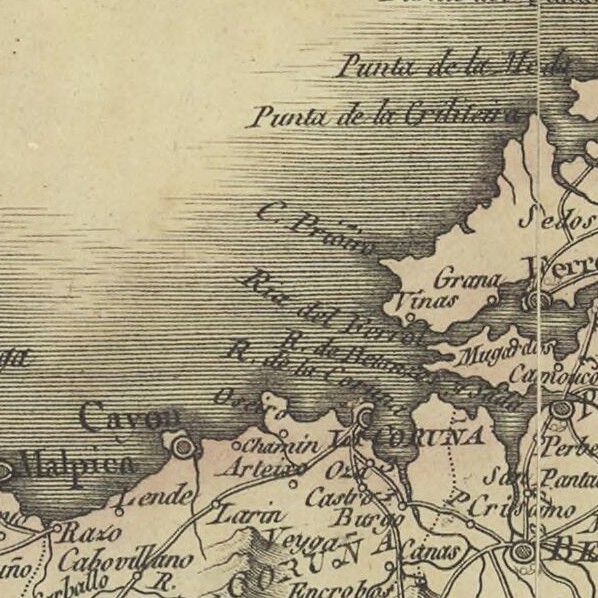
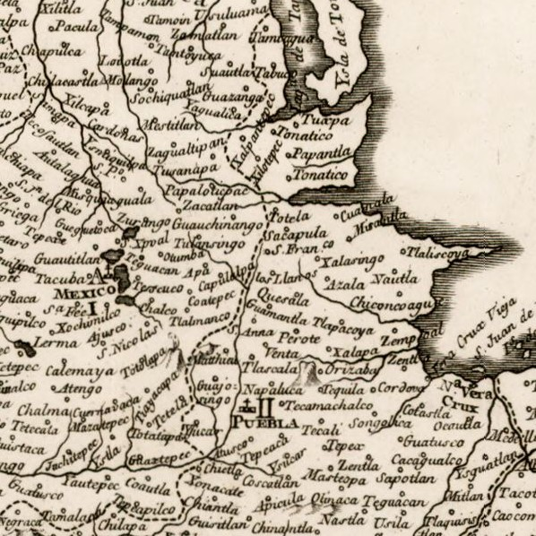
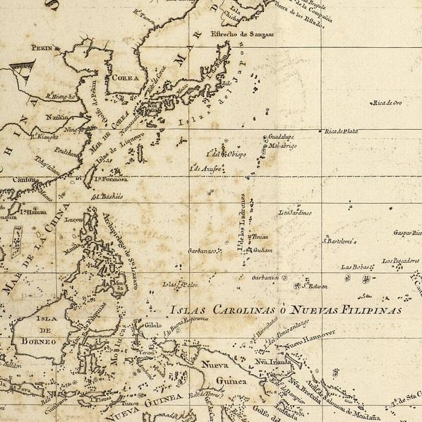

The Balmis's expedition
Home
Documentation
Indiferente 1558A
Libro de Actas
Route
Joint Expedition
Balmis in America
Balmis in Asia
Members
Bibliography
Route followed by the Expedition
Francisco Xavier y Balmis

Joint Expedition

Sub-expedition Balmis in America

Sub-expedition Balmis in Asia
